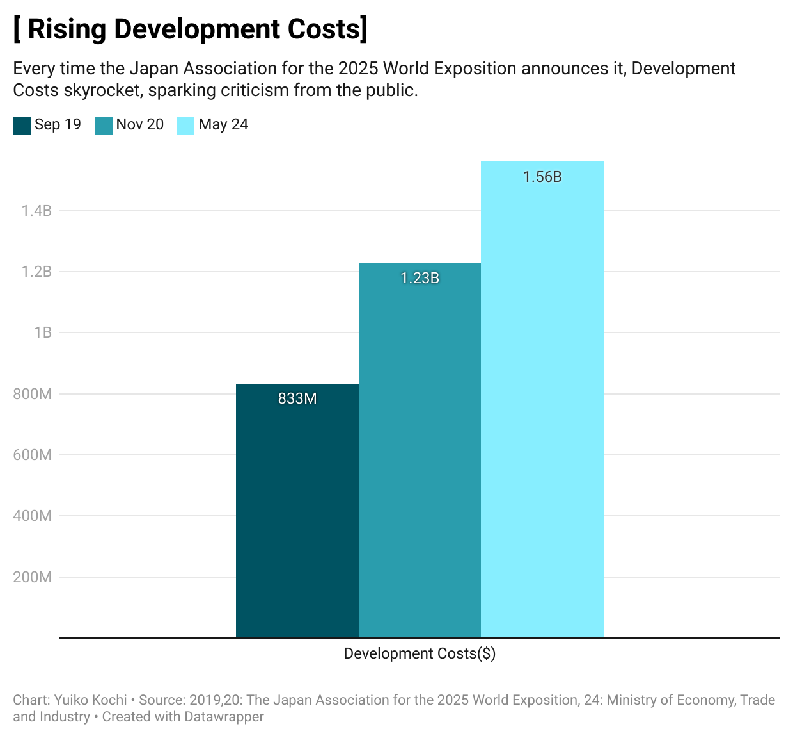
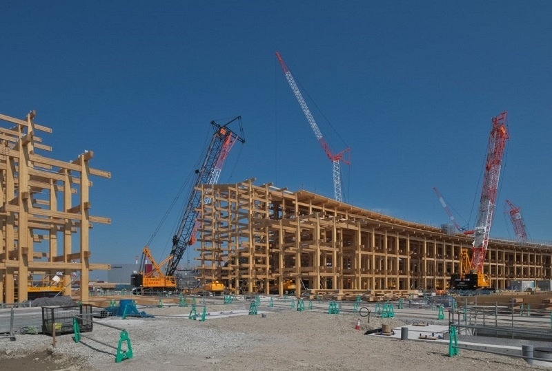
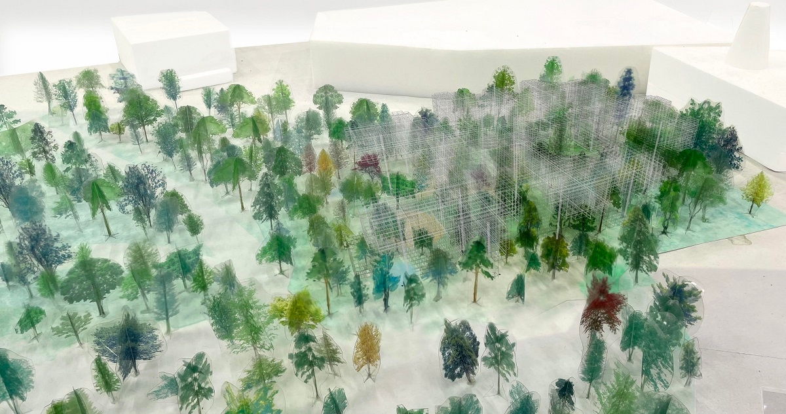
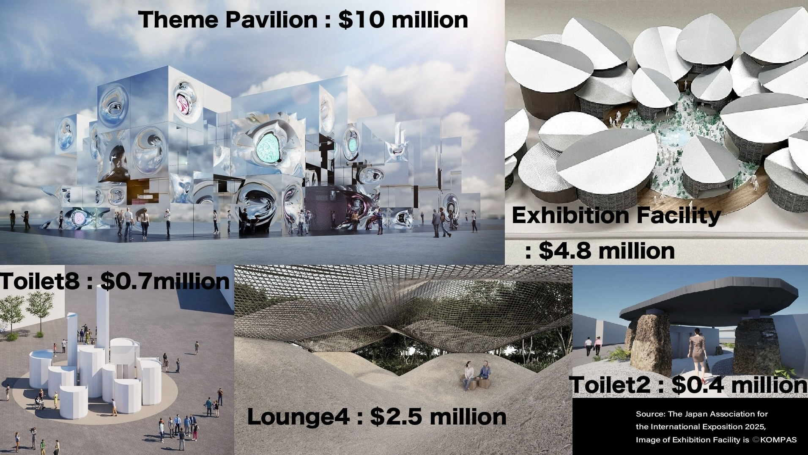

High Cost, Low Buzz: The World Expo is Just Around the Corner
Do We Really Need an Event That Requires Spending $1million on One Toilet?
By Yuiko Kochi
This summer, the world is buzzing with excitement for the Paris Olympics. Meanwhile, in Japan, construction is steadily progressing
towards the World Expo scheduled for 2025. The host city will be in the Kansai region, specifically Osaka. Even though the event is
set to start in just 9 months, there is a lack of excitement within Japan. The primary reason for this is the enormous cost.

The Japanese government and other stakeholders began their bid to host the Expo in 2017. Initially, the estimated cost was set at
$823 million (approximately ¥125 billion). However, due to rising material costs and labor expenses, the Japan World Expo 2025
Association revised this estimate to $1.23 billion (about ¥185 billion) in November 2020, and again to $1.56 billion (around ¥235 billion)
in November 2023. As of May 2024, these figures remain unchanged. Compared to the original plan, this represents an increase of
about 1.9 times!

Naturally, the increased expenditures by the national and local governments have led to taxpayers expressing their frustration.
A major point of contention is the main facility named 'Ring', a grand roof structure with high construction costs.
This massive wooden building, one of the largest in the world, will feature a diameter of 675 meters, an outer height of 20 meters,
and a 2-kilometer-long pedestrian walkway. Renowned architect Sou Fujimoto is designing the structure, and three of Japan's leading
construction companies are each responsible for different sections of the project.
Facing significant criticism, a designer and officers from the Japan International Exposition Association 2025 have emphasized
the importance of using traditional techniques in construction and the role of key buildings in the overall layout of the venue.
They also highlighted the plan to reuse the structures after the Expo's closure. However, the proposed reuse plans remain in limbo,
with no clear purpose in sight.
Meanwhile, let's compare the construction bids. The chart below lists the winning bid prices for architectural construction of various
facilities, including the Theme Pavilions, Reception Hall, Toilets, and Lounges, as announced by the Japan Association for the International
Exposition 2025.
Indeed, when looking at the amounts for each construction project, the grand roof stands out significantly. To be specific, this figure
includes gates and ancillary management facilities as well, so the amount dedicated solely to the grand roof across the three sections
will be $214 million (approximately ¥34.4 billion).
Information on the names of each facility, winning bid amounts, and designers has been compiled. For the Grand Roof,
since different construction companies are responsible for different sections, this is also noted in the facility names.
Hovering over each item will display a label with detailed information.
However, a different perspective reveals another truth. When dividing the construction costs by the area of each facility,
it becomes clear that the grand roof may not be as 'expensive' as it seems. Instead, attention should be focused on one of
the theme pavilions. Designed by the world-renowned architectural unit SANAA, this pavilion, despite its small size,
turns out to be surprisingly costly.
Compared the bid amounts for each facility by dividing them by their respective areas.
Below is an illustration of the pavilion designed by SANAA. While the roof-only structure surrounded by greenery offers
a sense of openness, the building's area is relatively small, resulting in a significantly high cost per square meter.
In reality, the quantity of materials used is expected to be minimal, I cannot understand how the money is being spent.

(Source: the Japan Association for the International Exposition 2025)
Similarly, the cost of restrooms appears to be quite high. The construction for what is referred to as 'Restroom 8',
despite its compact size of 56 square meters, costs $666,000. While the design of small-scale facilities such as
restrooms and lounges are being entrusted to young architects as a challenge, there are doubts about whether
the validity of these costs has been thoroughly examined.

Added prices to the images released by the Japan Association for the International Exposition 2025.
There are other issues lurking as well. For example, despite the unique characteristics and varying materials of
each facility, why do the costs align so closely? Additionally, one of the theme pavilions has a situation
where no construction company has submitted a bid. Will it truly be ready in time for the opening?
Now, we must consider the purpose of hosting such an expensive World Expo. To understand its significance,
examining the costs is a good place to start. Comparing past expos held since 2000, the 2010 Shanghai Expo
had an exceptionally high number of visitors, while the 2020 Dubai Expo performed well despite the challenges
posed by the COVID-19 pandemic.
Next, I compared the Profit and Loss, and Economic Impacts based on Japanese government materials and newspaper
reports. Since the economic impact of the 2020 Dubai Expo and the 2025 Osaka-Kansai Expo has not yet been disclosed,
I assumed it to be zero. Among these, the 2000 Hannover Expo is often cited as a 'historical failure.' The number of
visitors significantly fell short of expectations, resulting in a reported deficit of 2.4 billion marks (approximately $80 million).
Learning from that failure, the 2005 Aichi Expo was held with great caution. While the Aichi Expo did not attract an exceptionally
large number of visitors, it ultimately had a financial outcome comparable to the Shanghai Expo, making it a model of success
in the expo business.
The financial performance and economic impacts are based on announcements from respective countries and research institutions,
and the methods of calculation are not necessarily consistent. However, it is possible to discern certain trends.
The construction for the Osaka-Kansai Expo has already begun, and it is no longer feasible to cancel or reduce costs at this point.
Nonetheless, I believe it is essential to thoroughly examine the costs, benefits, and decision-making processes to question
the significance of continuing to host expos in various locations in the future.